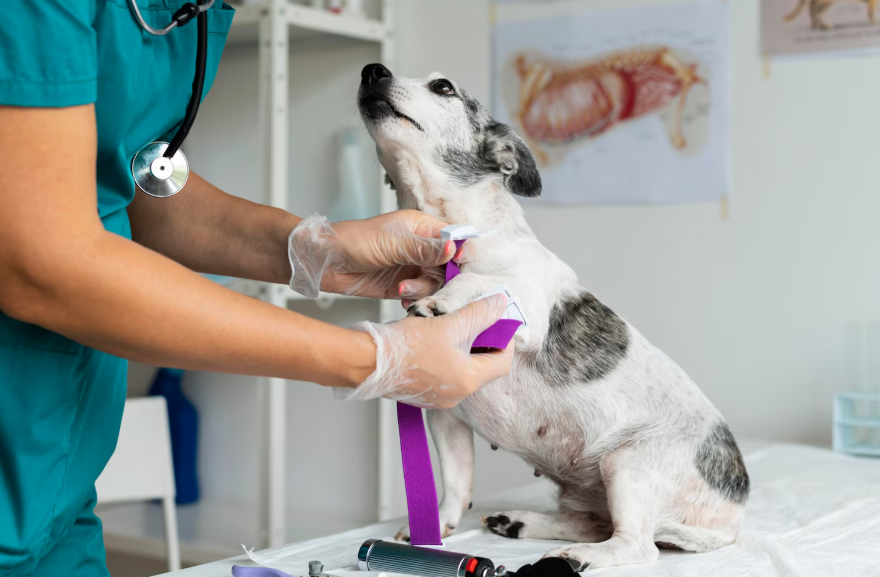
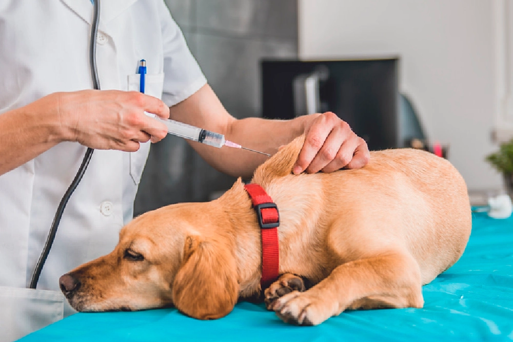
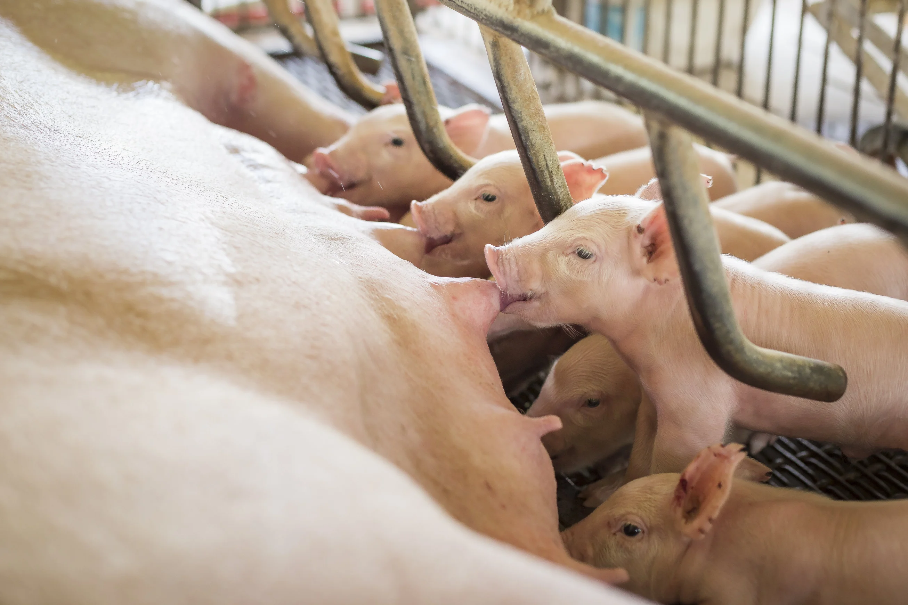

Nuestros Servicios

Castración
Procedimientos seguros para perros, gatos y animales de granja.

Vacunación
Esquemas completos de vacunación para todas las edades.

Consultas Médicas
Diagnóstico y tratamiento profesional para tus animales.

Atención a Ganado
Servicios veterinarios para vacas, puercos y animales de rancho.